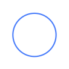
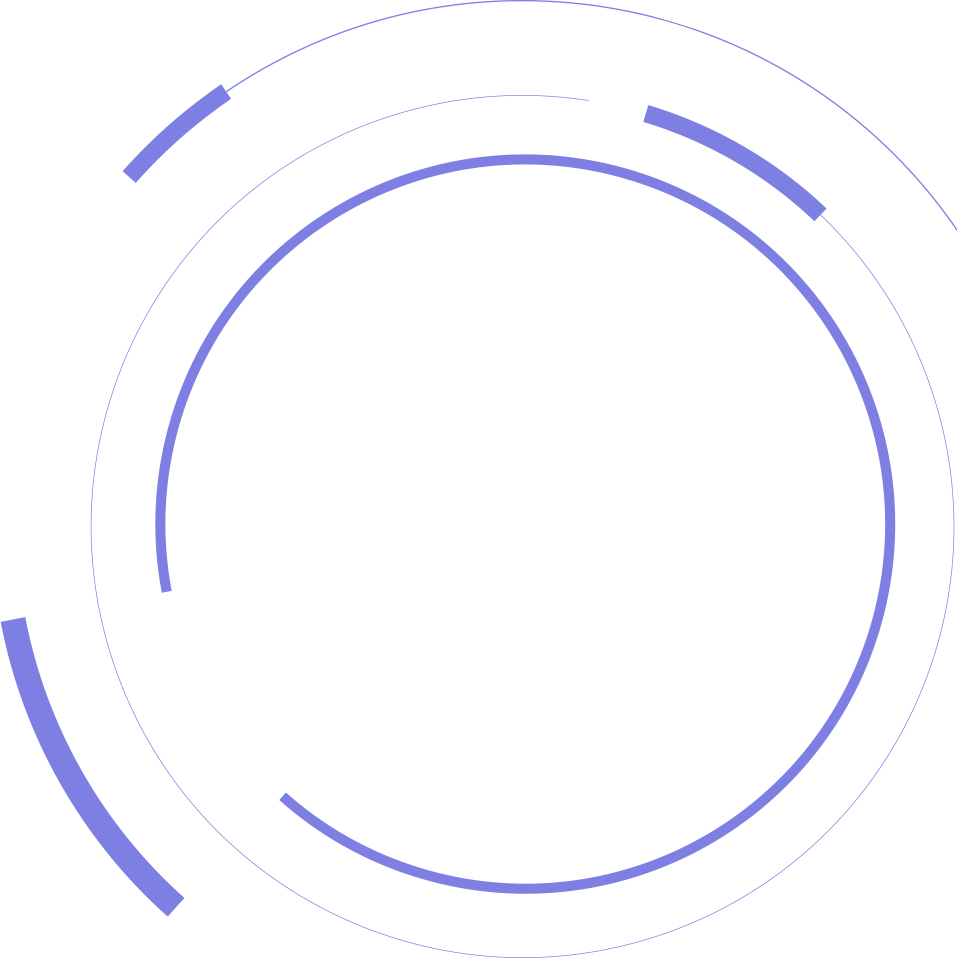
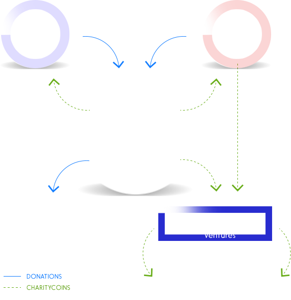

World's first cryptocurrency mined by charitable giving
CharityCoin is the general purpose cryptocurrency which is being emitted against donations to internationally recognized non-profits and philanthropic organizations
What CharityCoin can do

Allow donators to earn returns with their charitable giving. Returns may also be used for philanthropic causes
Multiply impact of a donation: $1 given via Charity Coin Foundation produces a long term effect of $10 - 20 or even a $100*
* Depends on CharityCoin exchange rate
Team


Nikita Goldsmit
MD (born April 21, 1985), Russian entrepreneur, founder of
Dialog Messenger - unified communication solution. One of the fastest growing startups in Russia appraise at
$26 million < 1 year after it was founded.
Founder of Global Coop project - universal communication platform for members of international cooperative alliance.
Alexander Borodich
Borodich is a private investor, the founder of the Universa blockchain platform, managing partner of marketing
communication agency FutureAction, the founder of FutureLabs Future Laboratory and the VentureClub.ru investor club,
a crowd-investment platform and an investor club.
Solving poverty — a long way to go
Current non-profit organizations depend on donators and their present willingness and ability to give.
Such model is very dependent on economy level, motivating tax regulations and other external and often unpredictable factors.
Future charities will utilize sustainable model, and will be run like businesses.
Our vision for the next generation of charities - a hybrid of investment and philanthropic vehicle.
This became possible with the leverage of blockchain technology.
Charity Coin is the general purpose cryptocurrency which is being emitted against donations to
internationally recognized non-profits and philanthropic organizations.
Main concept is that every donator end up making profit compared to the donated amount
People living in extreme poverty, 2017
less than $1 / day
383M
Africa
327M
Asia
19M
S. America
13M
N. America
2.5M
Oceania
* less than $1 / day
How it works
Virtual mining difficulty is being adjusted on a daily basis and published on CharityCoin web site.
In order to mine CharityCoins, corresponding amount has to be transferred to a non-profit CharityCoin Foundation
(a non profit organization established under the law of Switzerland). Also instructions on which non-profit
organizations shell receive the donation may be provided.
After donations is received, confirmed by CharityCoin Foundation and published on our
Charity Ledger corresponding amount of CharityCoins will be issued and transferred to donators wallet.
Each donation effects the difficulty of virtual mining, thus emission price of 1 CharityCoin will increase.
Future virtual mining difficulty

How it is supervised
CharityCoin Foundation account balance is publicly available online, as well as total CharityCoins in circulation.
By performing simple calculations each user may verify that all the coins were issued correctly.
CharityCoin Foundation is regularly supervised by Pricewaterhouse Coopers.
Result of a monthly audit is always available online for anybody concerned.
Emission of the coins may only occur when funds are successfully deposited on the foundation account, confirmed by the bank.
How it is sustainable
There are two streams of funds coming into foundation - emission of CharityCoins and proceeds generated by CharityCoin Ventures.
CharityCoin Ventures is a for-profit investment fund, fully owned by CharityCoin Foundation,
thus 100% of profits ever made by CCV will be directed towards CCF and used for charitable giving.
CCV is funded by CharityCoins or direct donations. Within each emission of CharityCoins additional 2.5% are emitted & credited to CCV wallet.
CharityCoin Foundation
CCV has the following functions assigned to it:
- Sell Charity Coins on public exchanges
- Invest generated proceeds into ICOs / Coins or other early stage venture projects, or direct those to CCF
- Direct all dividends to CCF
- Maximize long-term returns
CCV will be governed by hired investment specialists and may have expenses associated with its business processes

Technology
Charity Coin is based on Universa. It is currently one of the fastest and cheapest blockchain solutions available.
Universa blockchain Protocol is a new generation blockchain protocol and platform, defined as a set of protocols and data formats,
which enable smart contracts owned and controlled by organizations and natural persons through a decentralized notary cloud certifying each transaction.
What gives CharityCoin Value? Is it backed by something?
1
To emit BTC or ETH fiat money has to be invested in mining, to ensure there are no "free" coins,
and coins are emitted at certain pace. BTC and ETH are backed by mining, or more accurately by money invested in mining
2
Cryptocurrency mining requires performing complicated meaningless calculations.
It is harmful for environment (wasted resources and carbon footprint) and for economy (artificial demand drives energy prices up)
3
CharityСoin is the first cryptocurrency emitted agains donations to internationally recognized non-profits
4
Each dollar spent on CharityCoins makes world a better place
5
Donators may donate to charities directly and make a good deed or donate to same charities by purchasing CharityCoins and make a good deed and profit
6
CharityCoin's mission is to build sustainable ecosystem which will constantly make proceeds which will be directed to philanthropic needs
7
CharityCoin is attractive for speculators and investors, just as BTC or ETH. CharityCoin is virtually mined by conducting donations to recognized non-profits.
Difficulty of virtual mining is constantly increasing at predictable pace, thus supply is gradually decreasing
8
Current charities are dependent on good will of donators. CharityCoin makes charitable giving a profit generating action